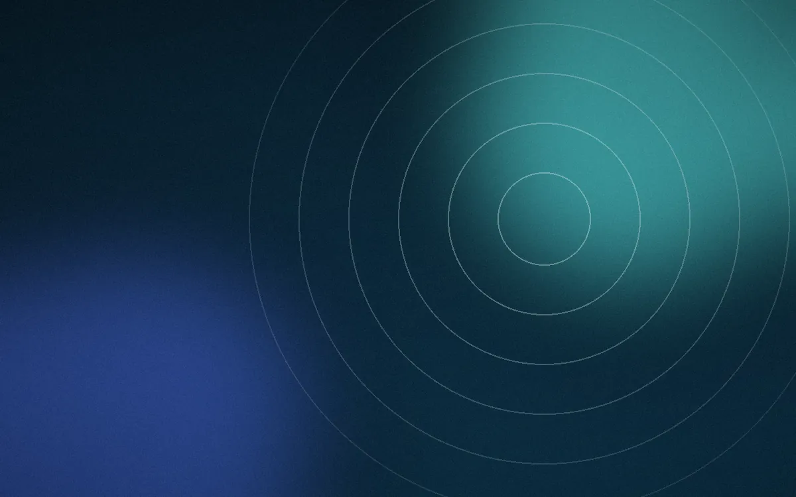

تازهترین مطلب
اضطراب همیشه بد نیست؛ از کجا بفهمیم زیادی شده؟
اضطراب بخشی از واکنش طبیعی ماست و گاهی حتی به کارمان میآید. در این مطلب میخوانید چه نشانههایی میگویند اضطراب وارد زندگی روزمره شده و اولین قدمهای ساده کداماند.
ادامهی مطلب